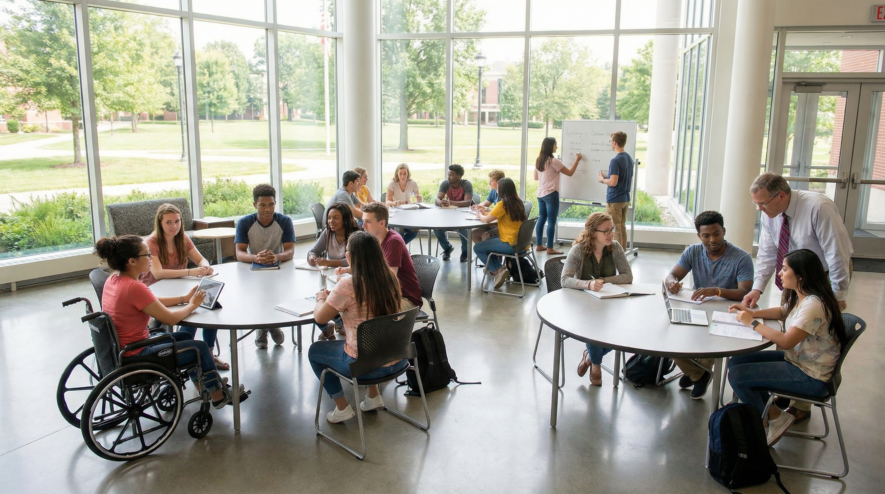
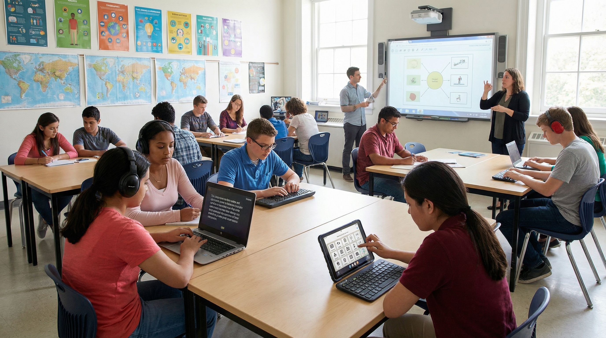
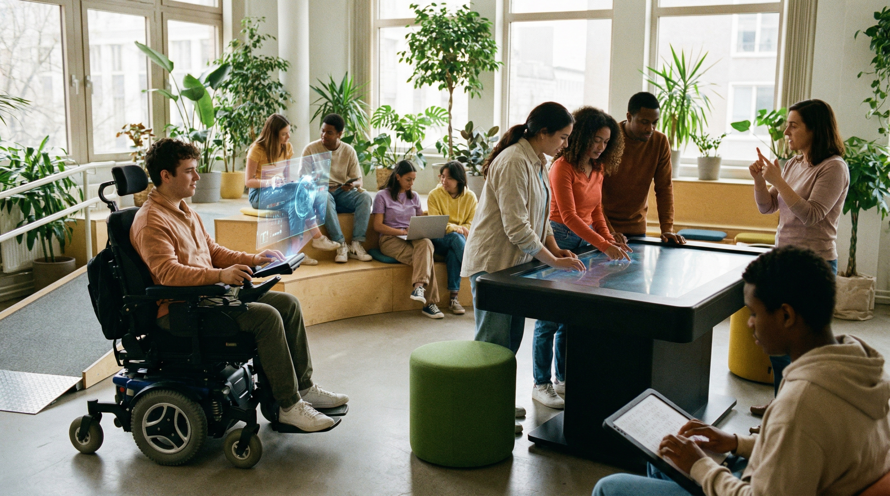

The Importance of Inclusive Learning
Introduction

Inclusive learning is an approach to education that aims to ensure every student has a fair opportunity to learn, participate, and succeed. It recognises that learners have different needs, abilities, backgrounds, and experiences, and it encourages teaching methods that support everyone rather than only a small group of students.
In a truly inclusive learning environment, students feel respected, valued, and supported. This includes not only access to classrooms and materials, but also emotional support, equal treatment, and teaching approaches that help all learners stay engaged. Inclusive learning is important because education should not exclude students based on ability, background, language, or personal challenges.
This idea is strongly connected to Sustainable Development Goal 4: Quality Education, which promotes inclusive and equitable education for all. By creating learning spaces where everyone can participate, schools and universities can help build a more equal and supportive future.
Supportive Learning Tools

There are many tools and strategies that can help make education more inclusive. These include assistive technologies, captioned videos, screen readers, speech-to-text tools, visual learning resources, and flexible teaching methods. These tools support students with different learning needs and help remove barriers that might otherwise affect participation.
Teachers can also create more inclusive lessons by using a variety of teaching methods. Some students learn better through reading, while others may prefer visuals, discussion, practice, or group work. Providing content in different formats gives more students the chance to understand and engage with the material.
Peer support is another important part of inclusive learning. Group activities, class discussions, and collaborative tasks can help students learn from one another and feel more connected. When students support each other, the learning environment becomes more welcoming and less intimidating.
Benefits of Inclusive Learning
One of the biggest benefits of inclusive learning is that it creates a stronger sense of belonging. Students are more likely to participate, ask questions, and build confidence when they feel accepted and supported in the classroom.
Inclusive learning also helps improve fairness in education. It gives more students access to the support and resources they need, which can reduce inequality and improve academic performance. Instead of expecting every student to learn in the same way, inclusive education recognises that different learners may need different types of help.
Another important benefit is that inclusive classrooms often create stronger social understanding. Students learn to work with people from different backgrounds, abilities, and perspectives. This not only improves classroom relationships but also prepares students for diverse workplaces and communities in the future.
Overall, inclusive learning creates a more positive educational experience. It supports both academic development and personal growth, making education more meaningful and more effective for a wider range of learners.
Challenges to Inclusion
Although inclusive learning is an important goal, there are still many challenges that can prevent it from being fully achieved. One common issue is the lack of resources. Some schools and institutions may not have enough accessible materials, trained staff, or support systems to meet the needs of all learners.
Another challenge is limited awareness or understanding. Some people may not fully recognise the importance of accessibility, different learning styles, or the barriers faced by certain students. This can lead to exclusion, misunderstanding, or teaching methods that do not support everyone equally.
Students may also face social barriers such as discrimination, stereotyping, or lack of confidence. If students feel judged, ignored, or unsupported, they may become less engaged in learning and less likely to participate actively.
These challenges show that inclusion is not only about physical access - it is also about attitudes, support, and creating an environment where every student feels that they belong.
The Future of Inclusive Education

The future of education should be more inclusive, flexible, and accessible for all learners. As technology and teaching methods continue to develop, there is an opportunity to build systems that better support students with different needs and backgrounds.
Schools and universities can improve inclusion by using accessible digital tools, offering more personalised learning experiences, and creating spaces where students feel safe and supported. This means designing education in a way that works for a wide range of learners, rather than expecting everyone to fit into one standard model.
In the future, inclusive education should also involve stronger student voice and participation. Students themselves can help shape better learning environments by sharing feedback, supporting their peers, and promoting a culture of respect and equality.
If education systems continue to move toward inclusion, they will become more effective, more humane, and more capable of supporting long-term personal and social development.
Conclusion
Inclusive learning is essential for building fair and supportive education systems. It ensures that all students, regardless of their background or ability, have the opportunity to learn, participate, and succeed.
While there are still challenges to overcome, inclusive learning offers important benefits such as confidence, belonging, fairness, and stronger educational outcomes. It also helps create classrooms and communities where diversity is respected and valued.
By promoting inclusive learning, schools, students, and communities can take meaningful steps toward achieving Sustainable Development Goal 4 and creating a better future through education for all.